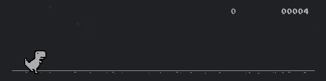

Take a look at the slowed down video above. It's 3 646x161 frames of the Chrome dinosaur game, or 312018 pixels in all. That's a lot of values, and this is only three frames of a low resolution video! If you realize that most videos are posted in 1920x1080 resolution with 30 frames per second, you'll see how this becomes an issue.
Now, hover over that video. You'll see an overlay in white of the pixels that have actually changed between one frame and the next, which is only a tiny fraction of all the pixels in the image. To encode this video in data, all the data you need is the initial state and the difference between each frame and the one before.
To demonstrate, I've created a new, simplified video format. Say we have a 4-frame, 3x3 pixel video in black and white, the frames of which are shown below. In my method, the first 3 frames of the image are represented as this sequence of numbers and characters: "101010101|3090.10317091.". Your next flag is the sequence of numbers that needs to be added to my sequence to encode the fourth frame. Good luck!
Frame 1:
Frame 2:
Frame 3:
Frame 4:
/ `. .' "
.---. < > < > .---.
| \ \ - ~ ~ - / / |
_____ ..-~ ~-..-~
| | \~~~\.' `./~~~/
--------- \__/ \__/
.' o \ / / \ "
(_____, `._.' | } \/~~~/
`----. / } | / \__/
`-. | / | / `. ,~~|
~-.__| /_ - ~ ^| /- _ `..-‘ / \ /\
| / | / ~-. `-/ _ \/__\
|_____| |_____| ~ - . _ _ _ _ _>